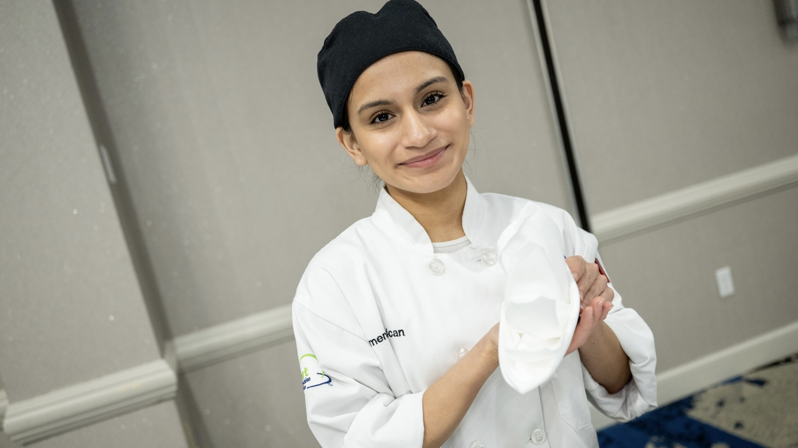
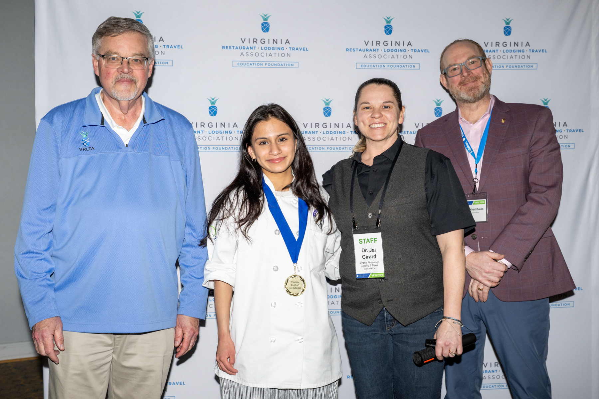
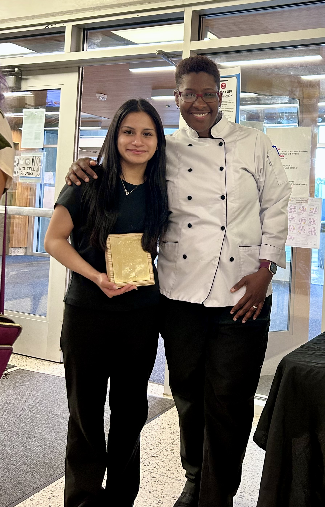

During my highschool journey, I have worked to obtain some certifictions that I know will be useful for my future. Here is a list of them:
Representing the Arlington Career Center's Team Culinary at the Virginia ProStart Invitational, I earned 1st place in the Napkin Folding category by demonstrating technical precision and artistic detail. This competition required me to master complex folds and maintain perfect symmetry under a time limit, proving my dedication to the fine dining standards.


On my first year of the Culinary Arts program, I earned the ACC Culinary Award for Outstanding Academic and Technical Achievements in Culinary Arts. This award recognized me as a student that demonstrated exceptional academic performance, technical skills, program engagement, passion for learning, and dedication to the ACC Culinary Program. I believe this award symbolizes and showcases my commitment to the program and ability to learn and apply new knowledge in the industry.
